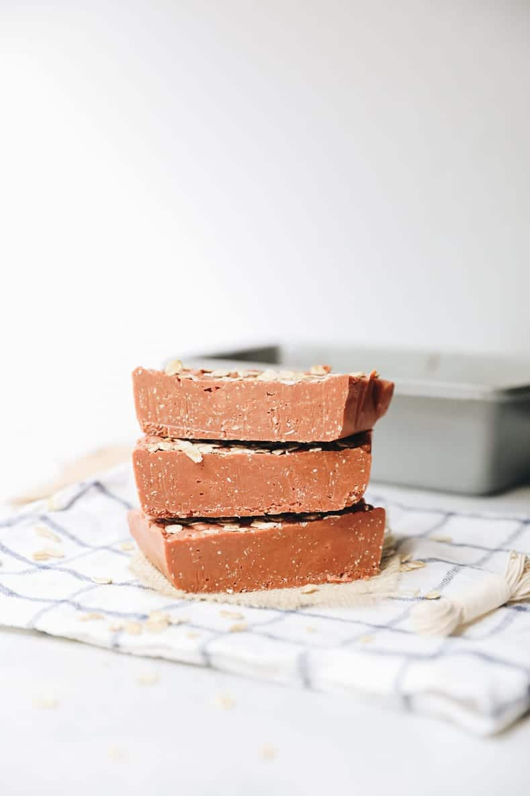
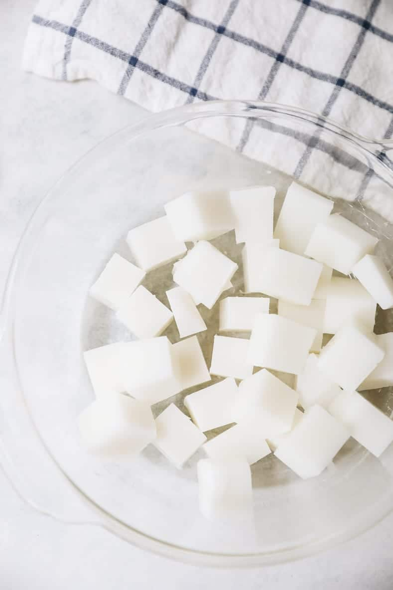
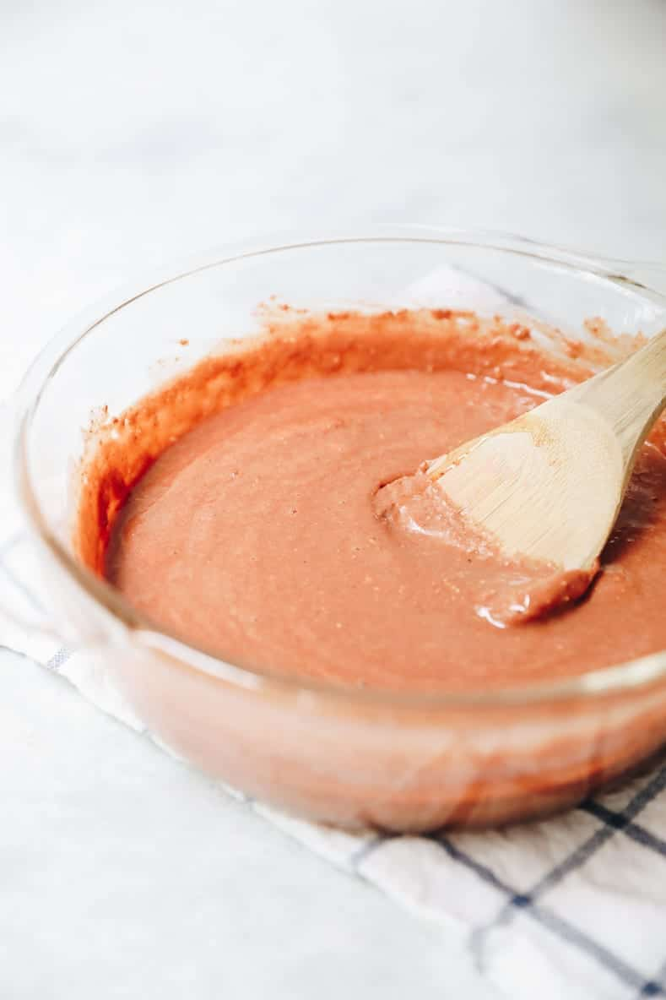
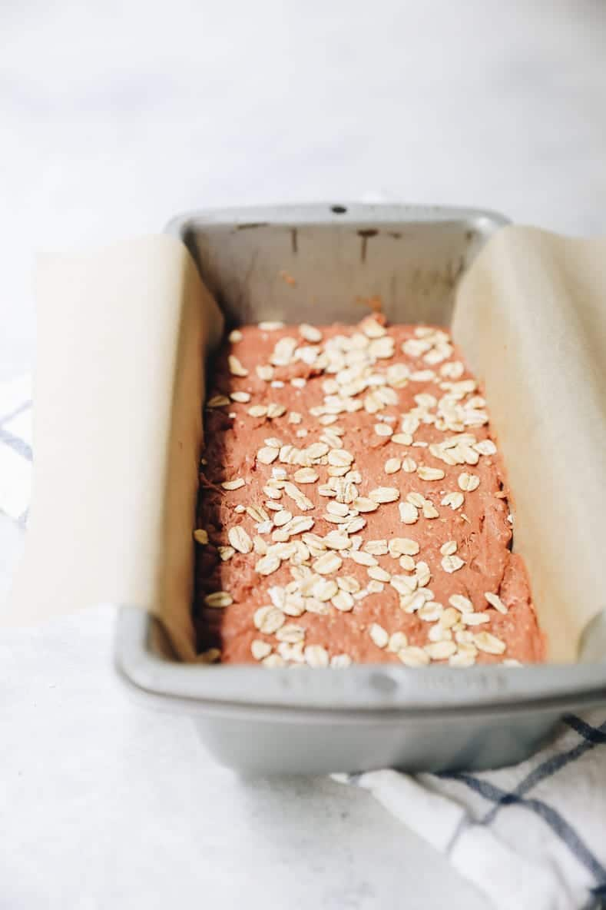
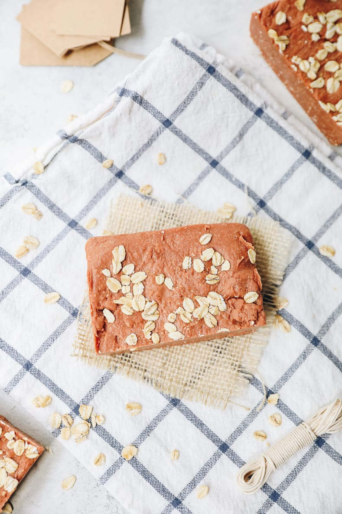

HOW TO MAKE HOMEMADE BAR SOAP [FOR SENSITIVE SKIN]
Looking to learn how to make homemade bar soap? It’s easier than you think! In this step-by-step guide I’ll show you how to make homemade bar soap using simple melt and pour soap and ingredients that benefit all skin types but especially sensitive skin!
Who knew that in 2020 soap would become our best friend?! Let’s not forget toilet paper too…although I’m all for the bidet making a comeback! But in all seriousness, soap has become all the more important and I’m here for it. But today we aren’t talking about hand soap (all hail branch basics sustainable pump refill!) we’re actually talking about body soap and how to make your own bar soap. Now I’m not gonna lie, for most of my life I used a liquid body wash, but as you guys know I’ve spent the last several years trying (emphasis on trying!) to make more sustainable choices and one of those simple swaps was to switch from liquid body wash to bar soap.
I actually got into making my own bar soap a few years ago as a budget saving activity and creative outlet. Some of you may remember that Lee and I used to run a DIY blog called SHEuncovered (RIP!) and I shared many a bar soap recipes over there. Because despite common beliefs, making bar soap is actually VERY easy! That’s because of one key ingredient: melt and pour soap.
Easy Hack= Melt + Pour Soap
While I love the idea of making soap from scratch, I’m also completely intimidated by it. From what I understand, to make soap from scratch it requires a chemical process using lye. Now I don’t believe it’s actually all that hard, anything requiring me to wear safety goggles and gloves is just not my jam. I prefer to the easier option of melt and pour soap.
What is melt + pour soap? It’s basically soap that has already been premixed and hardened into a block. Of course, you can use it as is but it can also be melted back down and ingredients added to it to make the soap mix you desire. In this case we added ingredients that are nourishing and moisturizing for a sensitive skin bar soap.
There are MANY types of melt + pour soap. Some things to look out for:
Make sure it is free of parabens, preservatives, and PEG
SLS free IF you have sensitive skin (it’s a known skin irritant)
NO added coloring
For sensitive skin look for products with:
shea butter
goat’s milk
cacao butter
What You Need
So let’s chat about what you need to make this homemade bar soap:
Melt + Pour Soap: See above for what to lookout for – I use goat’s milk soap.
Oat Flour (colloidal oatmeal): Can buy pre-made oat flour or blend up rolled oats in your blender until fine.
Pink Clay: Can help reduce inflammation and irritation on the skin. Also great for acne.
Raw Honey: A natural exfoliator but also super antibacterial so great for preventing acne.
Jojoba Oil (olive oil works too): Jojoba oil is a great moisturizing oil for sensitive skin. It Is hydrating but non-comedogenic so won’t clog pores. Olive oil works in place if you don’t have jojoba oil.
How to Make Bar Soap [Step-By-Step]
For those of you who have never made homemade bar soap before, I am going to walk you through the process. I promise it is easier than you think!
STEP 1: Gather and measure out all of your ingredients. Cut your melt + pour soap into small cubes (recipe calls for 1 lb which is half of a traditional 2 lb block). No need to measure, just estimate half. If you don’t have a silicone soap mold, line a loaf pan with parchment paper
STEP 2 : Melt your soap in the microwave in 30 second intervals, stirring in between OR make a double boiler on the stove top. I use the double boiler method and it will take about 10 minutes for your soap to melt. It is much faster in the microwave but make sure you don’t burn it.
STEP 3 : Once soap is fully melted, stir in all of the ingredients (oats, clay, honey and jojoba oil) until well combined.STEP 3: Once soap is fully melted, stir in all of the ingredients (oats, clay, honey and jojoba oil) until well combined.
STEP 4 : Pour your soap into your mold and top with rolled oats, if desired. Allow to sit for a few hours to harden (or place in the refrigerator for 1 hour if in a rush).
STEP 5 : Cut your soap into desired pieces. A soap mold can usually do about 6-8 small pieces or in a loaf pan you can usually get about 3-4 bigger pieces. Store your soap in a paper bag in a dark place indefinitely. They will not go bad.
1 bar soap will usually last months for us (for 2 people in the shower) so this recipe can honestly make enough bar soap for at least a year
Is This Soap Antibacterial?
Yes, this soap is antibacterial (if using the recommended melt and pour soap) though the CDC is still recommending liquid pump soap for washing your hands. Keep this bar soap in the shower to use on your body in place of liquid body wash.
Hopefully this can show you that making homemade bar soap is not that hard and can be both customizable and economical! Let me know if you give it a shot.